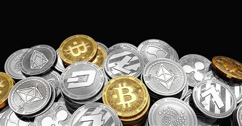

All of this information gives you the ability to own, obtain, and store your crypto. Whether you see it as an investment or intend to use it for transactions, this information will be more and more available to the general public and will be seen as common knowledge as time goes on. The underlying technology will become much more prevalent in the future, meaning it is good to be in the know ahead of time.
As time goes on the use of cryptocurrencies will be more widespread, and their usefulness and effectiveness will lead it to be more and more ingrained in our daily lives. Nowadays most people don’t even have any bills in their wallets at all, it’s already digital. When it finally gets adapted to regular transactions and optimized for consistency and speed, it will have taken longer for you to count out the bills, as opposed to typing in the amount. When it is woven into monetary systems, you won’t even think about it happening. Even now the value of such a system would be tremendous to countries with certain failing currencies, for example, the Turkish Lira, and Venezuelan Bolivar, among several other national currencies. Considering your currency is most likely not in a death spiral, having all the knowledge of another method to store value, works to serve as an alternative to being trapped in a failing currency or corrupt government. If it is more to your taste, you can simply consider it a more risky investment than the usual options. To whatever end you find value in this, it all comes with another level of perceived personal freedom. With this freedom comes the lack of the usual safety net to return in the event of faulty transactions or scams, however, that means it is up to you to discern between good and bad. You and only you are your wallet’s security, protect your keys to the best of your ability.
